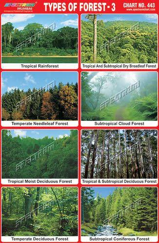
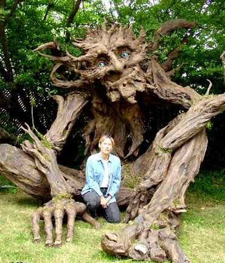
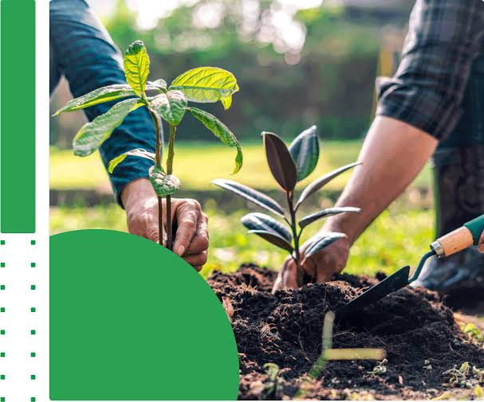
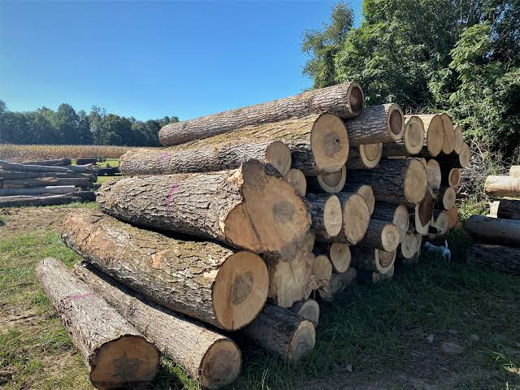
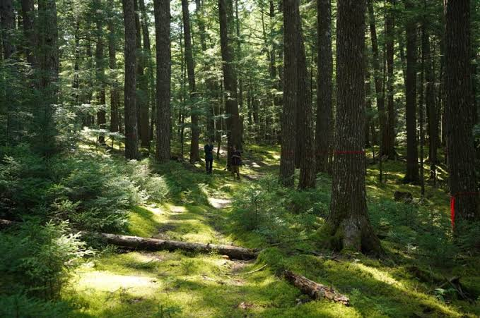
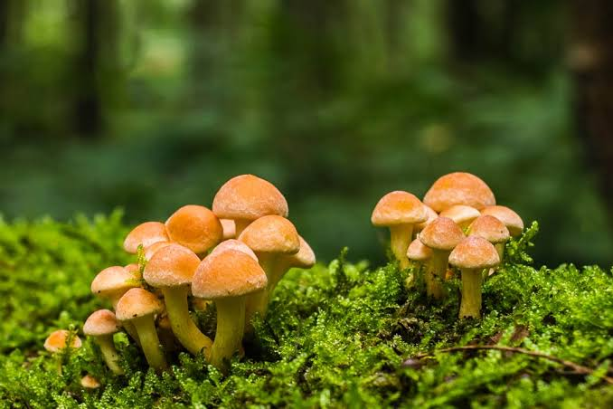

WELCOME TO FORESTRY (FORESTRY)
WHY STUDY FORESTRY?
Forestry is vital for environmental protection, sustainable livelihoods, climate change mitigation, and the production of timber and non-timber forest products that support millions of people worldwide.
Introduction to Forestry
Forestry is the science and art of managing forests for multiple benefits including timber production, environmental protection, wildlife habitat, water conservation, and carbon sequestration. Forests cover approximately 30% of the world's land area and are home to 80% of terrestrial species. They play critical roles in regulating climate, preventing soil erosion, maintaining water cycles, and providing livelihoods for over 1 billion people.
Forests are the lungs of the earth, providing oxygen, absorbing carbon, and sustaining all life that depends on the land.
Modern forestry balances economic productivity with environmental sustainability. Rather than merely harvesting trees, foresters manage forests as dynamic ecosystems that can be harvested repeatedly while maintaining ecological functions. This requires knowledge of tree biology, forest ecology, silviculture (tree cultivation), harvesting techniques, and conservation principles.
Forest Types and Classification
Forests are classified by multiple criteria including climate zone, dominant tree species, and management status. Tropical rainforests occur near the equator with high rainfall and species diversity. Tropical seasonal forests have wet and dry seasons. Temperate forests occupy mid-latitudes with moderate rainfall and distinct seasons. Boreal forests occur at high latitudes with short growing seasons and coniferous trees.

Each forest type has unique characteristics, challenges, and opportunities that determine appropriate management strategies.
Forests are also classified by age and structure. Old-growth forests are mature, have complex structure, and provide critical habitat. Secondary forests are regenerating after logging or disturbance. Plantations are uniform-aged stands established for timber production. Understanding forest type guides decisions about which species to plant, how to manage fires, and which conservation measures are needed.
Tree Species and Selection
Thousands of tree species exist globally, each adapted to specific climates and soil conditions. Timber trees valued for harvesting include pine, oak, teak, and mahogany. Fruit trees such as mango, coconut, and cashew provide food and income. Fuel wood species like eucalyptus and acacia grow rapidly. Native species are adapted to local conditions and support wildlife, while exotic species may grow faster but can harm local ecosystems if they escape cultivation.

Selecting appropriate tree species ensures successful growth, ecological stability, and sustainable harvest for generations.
When selecting tree species, foresters consider growth rate, timber quality, market value, pest and disease resistance, climate suitability, and ecological benefits. Mixed-species forests provide greater diversity, reduce pest outbreaks, and support more wildlife than monoculture plantations. Choosing native species where possible protects biodiversity and maintains ecosystem functions.
Afforestation and Reforestation
Afforestation is the establishment of forests on land that has been without trees for a long time. Reforestation is replanting trees after harvesting or disturbance. Both activities help restore degraded lands, sequester carbon, prevent erosion, and create habitat. Successful establishment requires site preparation, quality seedlings, proper planting technique, and protection from browsing and fire during early growth.

Planting a tree is an investment in the future that grows for decades and provides benefits far beyond timber.
Nurseries produce high-quality seedlings appropriate for local conditions. Before planting, the site is often prepared by clearing competing vegetation and improving soil if necessary. Seedlings must be protected from wild animals and pests during establishment. Regular maintenance including weeding, thinning, and pruning improves growth and final timber quality.
Forest Management Practices
Forest management includes all activities that maintain or enhance forest health and productivity. Key practices include tending young forests through cleaning and thinning to remove weak trees and concentrate growth on crop trees. Pruning removes lower branches and improves wood quality. Fertilization may boost growth on poor soils. Fire suppression protects forests from uncontrolled burning, while controlled burning may be used to reduce fuel and manage understory.

Active management creates healthy, productive forests that benefit both people and nature.
Pest and disease management includes monitoring for outbreaks and using integrated approaches such as sanitation, biological controls, and targeted chemical application. Watershed management protects water sources by maintaining forest cover and managing erosion. Wildlife management balances timber production with habitat needs of game animals, birds, and other species.
Sustainable Harvesting
Sustainable harvesting removes trees in ways that maintain forest regeneration and ecosystem functions. Selective harvesting removes individual trees or small groups while leaving surrounding forest intact. Shelterwood harvesting creates gaps that allow regeneration while leaving seed sources. Clear-cutting removes all trees and is typically followed by replanting. The choice depends on forest type, species, objectives, and site conditions.

Responsible harvesting today ensures forests for tomorrow and maintains the benefits they provide to all.
Harvesting plans specify which trees to remove, access routes, and protective measures for remaining forest. Proper technique reduces damage to residual trees and soil. Equipment selection matters; helicopter removal avoids road building in sensitive areas, while ground skidding is more economical on accessible terrain. Post-harvest treatment of logging debris protects against fire and pests.
Forest Conservation and Protection
Forest conservation protects forests from clearing, degradation, and unsustainable use. Protected areas set aside for biodiversity, watershed protection, or sacred purposes allow forests to function without interference. Buffer zones around protected areas reduce human pressure. Community forests empower local people to manage forests and benefit from sustainable use.

Protecting forests protects our climate, our water, our wildlife, and our future.
Threats to forests include illegal logging, agricultural expansion, urban development, and climate change. Fire protection prevents devastating uncontrolled burns. Pest management prevents catastrophic outbreaks. Law enforcement prevents poaching of wildlife and illegal timber extraction. Conservation requires long-term commitment, adequate funding, local support, and integration with development goals.
Forest Products and Economics
Forests provide timber for construction and manufacturing, fuelwood for energy, pulpwood for paper, and countless non-timber products including fruits, nuts, medicinal plants, honey, and wildlife for tourism. Many rural communities depend on these products for income and subsistence. Sustainable management ensures these products continue indefinitely.

Forests generate wealth not just from timber, but from medicines, food, water, carbon credits, and tourism.
Forest economics evaluates whether timber revenues justify management costs and compensate for opportunity costs such as alternative land uses. Payment for ecosystem services recognizes that forests provide benefits such as carbon sequestration and water purification that have economic value. Certification programs verify sustainable management and help producers access premium markets. Processing forest products locally creates employment and higher value than exporting raw materials.